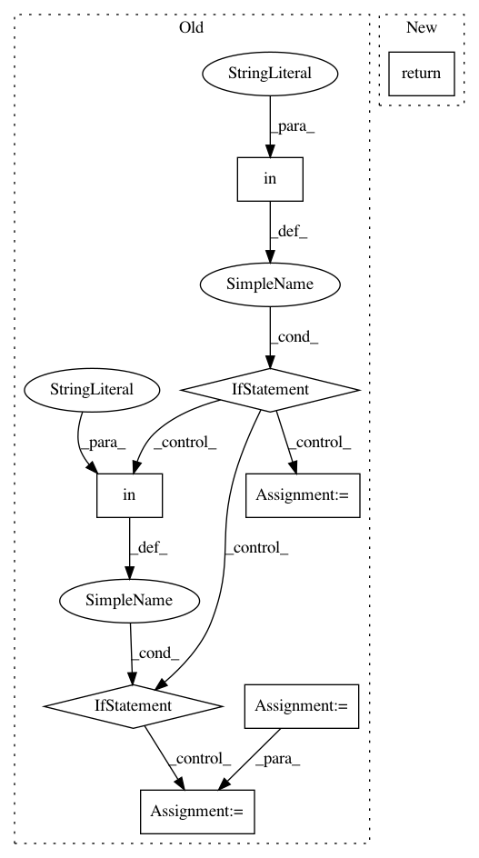

60824573db0199433c2be31fac4b1ab3d40d7c51,bokeh/plotting/figure.py,,figure,#,625
Before Change
if "plot_height" in kwargs and "height" in kwargs:
raise ValueError("figure() called with both "plot_height" and "height" supplied, supply only one")
if "height" in kwargs:
kwargs["plot_height"] = kwargs.pop("height")
if "width" in kwargs:
kwargs["plot_width"] = kwargs.pop("width")
if "responsive" in kwargs and "sizing_mode" in kwargs:
raise ValueError("figure() called with both "responsive" and "sizing_mode" supplied, supply only one")
if "responsive" in kwargs:
kwargs["sizing_mode"] = _convert_responsive(kwargs["responsive"])
del kwargs["responsive"]
fig = Figure(**kwargs)
return fig
_marker_types = [
After Change
"""
return Figure(**kwargs)
_marker_types = [
"asterisk",
In pattern: SUPERPATTERN
Frequency: 3
Non-data size: 8
Instances
Project Name: bokeh/bokeh
Commit Name: 60824573db0199433c2be31fac4b1ab3d40d7c51
Time: 2017-02-27
Author: maggie.mari@continuum.io
File Name: bokeh/plotting/figure.py
Class Name:
Method Name: figure
Project Name: WZBSocialScienceCenter/tmtoolkit
Commit Name: 8de95b27c53cc83b249a18c4b36bc4d82524cace
Time: 2019-02-20
Author: markus.konrad@wzb.eu
File Name: tmtoolkit/preprocess/utils.py
Class Name:
Method Name: remove_special_chars_in_tokens
Project Name: vatlab/SoS
Commit Name: ee5ce5f971b4e50f8d9b001e437c3b1ed17ce202
Time: 2017-05-23
Author: ben.bog@gmail.com
File Name: sos/R/kernel.py
Class Name: sos_R
Method Name: sessioninfo